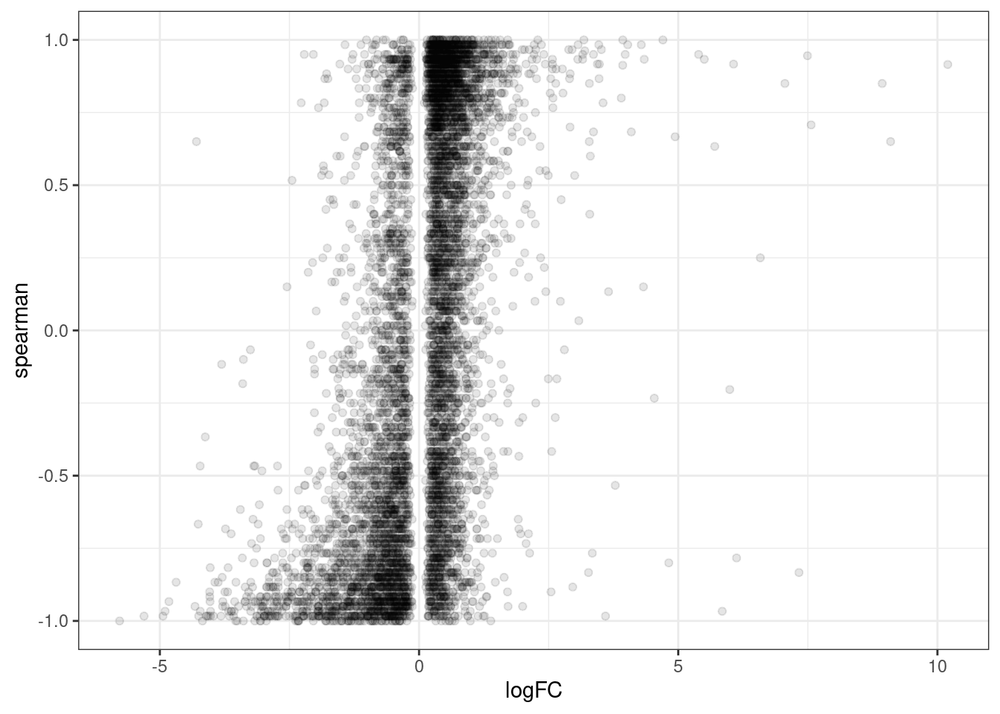
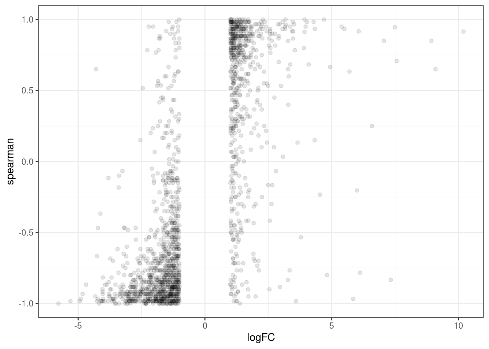
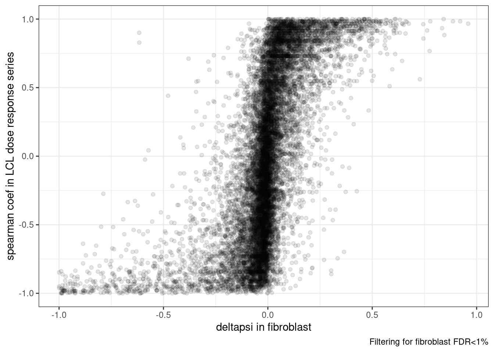
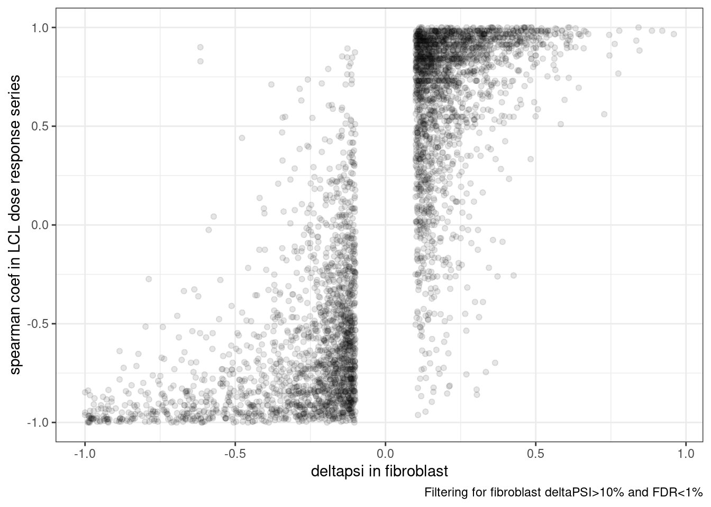

Last updated: 2022-09-16
Checks: 6 1
Knit directory: 20211209_JingxinRNAseq/analysis/
This reproducible R Markdown analysis was created with workflowr (version 1.6.2). The Checks tab describes the reproducibility checks that were applied when the results were created. The Past versions tab lists the development history.
The R Markdown is untracked by Git. To know which version of the R Markdown file created these results, you’ll want to first commit it to the Git repo. If you’re still working on the analysis, you can ignore this warning. When you’re finished, you can run wflow_publish to commit the R Markdown file and build the HTML.
Great job! The global environment was empty. Objects defined in the global environment can affect the analysis in your R Markdown file in unknown ways. For reproduciblity it’s best to always run the code in an empty environment.
The command set.seed(19900924) was run prior to running the code in the R Markdown file. Setting a seed ensures that any results that rely on randomness, e.g. subsampling or permutations, are reproducible.
Great job! Recording the operating system, R version, and package versions is critical for reproducibility.
Nice! There were no cached chunks for this analysis, so you can be confident that you successfully produced the results during this run.
Great job! Using relative paths to the files within your workflowr project makes it easier to run your code on other machines.
Great! You are using Git for version control. Tracking code development and connecting the code version to the results is critical for reproducibility.
The results in this page were generated with repository version 5418449. See the Past versions tab to see a history of the changes made to the R Markdown and HTML files.
Note that you need to be careful to ensure that all relevant files for the analysis have been committed to Git prior to generating the results (you can use wflow_publish or wflow_git_commit). workflowr only checks the R Markdown file, but you know if there are other scripts or data files that it depends on. Below is the status of the Git repository when the results were generated:
Ignored files:
Ignored: .DS_Store
Ignored: .Rhistory
Ignored: .Rproj.user/
Ignored: ._.DS_Store
Ignored: analysis/.RData
Ignored: analysis/.Rhistory
Ignored: analysis/20220707_TitrationSeries_DE_testing.nb.html
Ignored: code/.DS_Store
Ignored: code/._.DS_Store
Ignored: code/._DOCK7.pdf
Ignored: code/._DOCK7_DMSO1.pdf
Ignored: code/._DOCK7_SM2_1.pdf
Ignored: code/._FKTN_DMSO_1.pdf
Ignored: code/._FKTN_SM2_1.pdf
Ignored: code/._MAPT.pdf
Ignored: code/._PKD1_DMSO_1.pdf
Ignored: code/._PKD1_SM2_1.pdf
Ignored: code/.snakemake/
Ignored: code/5ssSeqs.tab
Ignored: code/Alignments/
Ignored: code/ChemCLIP/
Ignored: code/ClinVar/
Ignored: code/DE_testing/
Ignored: code/DE_tests.mat.counts.gz
Ignored: code/DE_tests.txt.gz
Ignored: code/DoseResponseData/
Ignored: code/Fastq/
Ignored: code/FastqFastp/
Ignored: code/FragLenths/
Ignored: code/Meme/
Ignored: code/Multiqc/
Ignored: code/OMIM/
Ignored: code/OldBigWigs/
Ignored: code/QC/
Ignored: code/Session.vim
Ignored: code/SplicingAnalysis/
Ignored: code/TracksSession
Ignored: code/bigwigs/
Ignored: code/featureCounts/
Ignored: code/geena/
Ignored: code/igv_session.template.xml
Ignored: code/igv_session.xml
Ignored: code/log
Ignored: code/logs/
Ignored: code/scratch/
Ignored: code/scripts/.TidyAndSpearmanCorTitrationData.R.swp
Ignored: code/test.txt.gz
Ignored: code/testPlottingWithMyScript.ForJingxin.sh
Ignored: code/testPlottingWithMyScript.ForJingxin2.sh
Ignored: code/testPlottingWithMyScript.ForJingxin3.sh
Ignored: code/testPlottingWithMyScript.ForJingxin4.sh
Ignored: code/testPlottingWithMyScript.sh
Ignored: data/._Hijikata_TableS1_41598_2017_8902_MOESM2_ESM.xls
Ignored: data/._Hijikata_TableS2_41598_2017_8902_MOESM3_ESM.xls
Ignored: output/._PioritizedIntronTargets.pdf
Untracked files:
Untracked: analysis/20220915_ExploreDoseResponseCryptic3ss.Rmd
Untracked: analysis/20220915_ExploreSpliceQOutput.Rmd
Untracked: analysis/20220916_CompareDE_LCL_Fibroblast.Rmd
Untracked: code/envs/spliceq.yaml
Untracked: code/scripts/MergeSpliceQ.Tables.R
Untracked: code/scripts/TidyAndSpearmanCorTitrationData.R
Unstaged changes:
Modified: code/Snakefile
Modified: code/rules/RNASeqProcessing.smk
Modified: code/scripts/GenometracksByGenotype
Note that any generated files, e.g. HTML, png, CSS, etc., are not included in this status report because it is ok for generated content to have uncommitted changes.
There are no past versions. Publish this analysis with wflow_publish() to start tracking its development.
I previously performed DE analysis in small molecule treated fibroblasts, and calculated correlation coefficients across dose-response data in LCLs… How do the measured effects between these two cell types compare. At the gene level? At the splicing level?
At the splicing level I strongly hypothesize signs of effects to be concordant. After all, the known mechanism for these molecules are by modifying U1:5’ss interaction, and since U1 is a ubiquitous factor in splicing (as opposed to say cell-type specific splice factors), I expect that an 5’ss that is enhanced in one cell type will similarly be enhanced in another. though because of cell-type-sepcific expressed genes, some introns just won’t be captured/measured well in all cell types. And to some degree, there may be some cell-type specific factors that determine which cryptic splice sites have activation potential, again meaning that not all introns will be captured efficiently in different cell types, but the sign of effects (that we can measure) should be very concordant.
As for gene expression, I am a bit less sure how concordant things will be… When small molecule induces a poison exon in a gene that downregulates expression in one cell type, are there other down-regulating (poison) or up-regulating induced exons that trump the first effect because of their stronger inclusion level?
Let’s read in the data… starting with gene expression data
library(tidyverse)
DE.fibroblast.dat <- read_tsv("../code/DE_testing/Results.txt.gz") %>%
separate(Geneid, into=c("EnsemblID", "GeneSymbol"), sep = "_")
Expression.LCL.dat <- read_tsv("../code/DoseResponseData/LCL/TidyExpressionDoseData.txt.gz")Note that the small molecules used in the fibroblast data aren’t exactly the same as in the LCL dose response series. From looking at a number of branaplam-specific and rsidiplam-specific splice events (determined as such in LCLs) in the fibroblast data, I can tell that SM2 is most like branaplam. For now, let’s keep our comparisons between cell types to comparing these two similar molecules.
First I’ll compare significant DE genes (in fibroblast) to the spearman correlation coef in LCLs across the dose response series, limiting to genes that are reasonable expressed.
GenesExpressedInLCLs <- Expression.LCL.dat %>%
group_by(Geneid) %>%
filter(max(CPM) > 1) %>%
pull(Geneid) %>% unique()
DE.fibroblast.dat %>%
filter(treatment == "SM2") %>%
inner_join(
Expression.LCL.dat %>%
filter(treatment == "Branaplam") %>%
distinct(Geneid, treatment, .keep_all=T),
by=c("EnsemblID"="Geneid")
) %>%
filter(FDR < 0.01) %>%
filter(EnsemblID %in% GenesExpressedInLCLs) %>%
ggplot(aes(x=logFC, y=spearman)) +
geom_point(alpha=0.1) +
theme_bw()
Ok, there is clearly some positive correlation. That’s reassuring somewhat. It’s pretty busy with low effect things that are hard to interpret in this messy plot. Let’s replot, just focusing on larger effect sizes, say greater than 2 fold change:
DE.fibroblast.dat %>%
filter(treatment == "SM2") %>%
inner_join(
Expression.LCL.dat %>%
filter(treatment == "Branaplam") %>%
distinct(Geneid, treatment, .keep_all=T),
by=c("EnsemblID"="Geneid")
) %>%
filter(FDR < 0.01) %>%
filter(abs(logFC)>1) %>%
filter(EnsemblID %in% GenesExpressedInLCLs) %>%
ggplot(aes(x=logFC, y=spearman)) +
geom_point(alpha=0.1) +
theme_bw()
Ok, maybe to get a better intuition, let’s calculate the number of concordant sign changes versus nonconcorant.
DE.fibroblast.dat %>%
filter(treatment == "SM2") %>%
inner_join(
Expression.LCL.dat %>%
filter(treatment == "Branaplam") %>%
distinct(Geneid, treatment, .keep_all=T),
by=c("EnsemblID"="Geneid")
) %>%
filter(FDR < 0.01) %>%
filter(abs(logFC)>1) %>%
mutate(Concordant = sign(logFC)==sign(spearman)) %>%
count(Concordant)# A tibble: 3 × 2
Concordant n
<lgl> <int>
1 FALSE 585
2 TRUE 2138
3 NA 118Ok, about 80% concordant signs. that’s pretty good I’d say.
Let’s also limit to abs(spearman)>0.9, which I have been using as a quick way to filter for genes/introns even worth modelling.
DE.fibroblast.dat %>%
filter(treatment == "SM2") %>%
inner_join(
Expression.LCL.dat %>%
filter(treatment == "Branaplam") %>%
distinct(Geneid, treatment, .keep_all=T),
by=c("EnsemblID"="Geneid")
) %>%
filter(FDR < 0.01) %>%
filter(abs(logFC)>1) %>%
filter(abs(spearman)>0.9) %>%
mutate(Concordant = sign(logFC)==sign(spearman)) %>%
count(Concordant)# A tibble: 2 × 2
Concordant n
<lgl> <int>
1 FALSE 30
2 TRUE 509Ok, close to about 90% concordance.
Let’s do some of the same type of analysis for splicing of introns.
First, to read in the fibroblast leafcutter differential splicing results…
cluster_sig_files <- list.files("../code/SplicingAnalysis/leafcutter/differential_splicing", "*_cluster_significance.txt", full.names = T)
effect_sizes_files <- list.files("../code/SplicingAnalysis/leafcutter/differential_splicing", "*_effect_sizes.txt", full.names = T)
treatments <- str_replace(cluster_sig_files, ".+/(.+?)_cluster_significance.txt", "\\1")
cluster.sig <- map(cluster_sig_files, read_tsv) %>%
set_names(cluster_sig_files) %>%
bind_rows(.id="f") %>%
mutate(treatment = str_replace(f, ".+/(.+?)_cluster_significance.txt", "\\1")) %>%
dplyr::select(-f)
effect_sizes <- map(effect_sizes_files, read_tsv) %>%
set_names(effect_sizes_files) %>%
bind_rows(.id="f") %>%
mutate(treatment = str_replace(f, ".+/(.+?)_effect_sizes.txt", "\\1")) %>%
dplyr::select(-f) %>%
unite("psi_treatment", treatments, sep=" ", na.rm=T) %>%
mutate(psi_treatment = as.numeric(psi_treatment),
cluster = str_replace(intron, "(.+?:).+:(.+?)", "\\1\\2"))
#Switch sign, so that positive means increase in treatment
effect_sizes <- effect_sizes %>%
mutate(deltapsi = deltapsi*-1,
logef = logef *-1)
#Combine effect sizes and significance for all samples into single df
leafcutter.ds <- effect_sizes %>%
left_join(cluster.sig, by=c("treatment", "cluster"))Now read in the LCL dose by intronPSI spearman correlation coefficients
Splicing.LCL.dat <- read_tsv("../code/DoseResponseData/LCL/TidySplicingDoseData.txt.gz")
dat.to.plot <- Splicing.LCL.dat %>%
filter(treatment == "Branaplam") %>%
group_by(junc) %>%
filter(max(PSI) > 10) %>%
ungroup() %>%
distinct(junc, treatment, .keep_all=T) %>%
inner_join(
leafcutter.ds %>%
filter(treatment == "SM2") %>%
separate(intron, into=c("#Chrom", "start", "end", "FibroblastCluster"), convert=T, sep=":"),
by=c("#Chrom", "start", "end")
) %>%
filter(p.adjust < 0.01)
dat.to.plot %>%
mutate(Concordant = sign(deltapsi)==sign(spearman)) %>%
count(Concordant)# A tibble: 3 × 2
Concordant n
<lgl> <int>
1 FALSE 2863
2 TRUE 9585
3 NA 35ggplot(dat.to.plot, aes(x=deltapsi, y=spearman)) +
geom_point(alpha=0.1) +
theme_bw() +
labs(caption="Filtering for fibroblast FDR<1%",
x="deltapsi in fibroblast", y='spearman coef in LCL dose response series')
dat.to.plot <- Splicing.LCL.dat %>%
filter(treatment == "Branaplam") %>%
group_by(junc) %>%
filter(max(PSI) > 10) %>%
ungroup() %>%
distinct(junc, treatment, .keep_all=T) %>%
inner_join(
leafcutter.ds %>%
filter(treatment == "SM2") %>%
separate(intron, into=c("#Chrom", "start", "end", "FibroblastCluster"), convert=T, sep=":"),
by=c("#Chrom", "start", "end")
) %>%
filter(p.adjust < 0.01) %>%
filter(abs(deltapsi)>0.1)
dat.to.plot %>%
mutate(Concordant = sign(deltapsi)==sign(spearman)) %>%
count(Concordant)# A tibble: 3 × 2
Concordant n
<lgl> <int>
1 FALSE 331
2 TRUE 3657
3 NA 5ggplot(dat.to.plot, aes(x=deltapsi, y=spearman)) +
geom_point(alpha=0.1) +
theme_bw() +
labs(caption="Filtering for fibroblast deltaPSI>10% and FDR<1%",
x="deltapsi in fibroblast", y='spearman coef in LCL dose response series')
I think it is fair to for the most part that a detected change in one cell type will not change sign in a different cell type. So to me, the point of assaying different cell types is more to gain power in cell-type-specific genes and introns, moreso than to measure cell-type specific effects. There may be some cell-type specific effect sizes, but it seems that sign switching is quite rare, at both the intron- and gene-level.
sessionInfo()R version 3.6.1 (2019-07-05)
Platform: x86_64-pc-linux-gnu (64-bit)
Running under: CentOS Linux 7 (Core)
Matrix products: default
BLAS/LAPACK: /software/openblas-0.2.19-el7-x86_64/lib/libopenblas_haswellp-r0.2.19.so
locale:
[1] LC_CTYPE=en_US.UTF-8 LC_NUMERIC=C LC_TIME=C
[4] LC_COLLATE=C LC_MONETARY=C LC_MESSAGES=C
[7] LC_PAPER=C LC_NAME=C LC_ADDRESS=C
[10] LC_TELEPHONE=C LC_MEASUREMENT=C LC_IDENTIFICATION=C
attached base packages:
[1] stats graphics grDevices utils datasets methods base
other attached packages:
[1] forcats_0.4.0 stringr_1.4.0 dplyr_1.0.9 purrr_0.3.4
[5] readr_1.3.1 tidyr_1.2.0 tibble_3.1.7 ggplot2_3.3.6
[9] tidyverse_1.3.0
loaded via a namespace (and not attached):
[1] tidyselect_1.1.2 xfun_0.31 haven_2.3.1 colorspace_1.4-1
[5] vctrs_0.4.1 generics_0.1.3 htmltools_0.5.3 yaml_2.2.0
[9] utf8_1.1.4 rlang_1.0.5 later_0.8.0 pillar_1.7.0
[13] withr_2.5.0 glue_1.6.2 DBI_1.1.0 dbplyr_1.4.2
[17] readxl_1.3.1 modelr_0.1.8 lifecycle_1.0.1 cellranger_1.1.0
[21] munsell_0.5.0 gtable_0.3.0 workflowr_1.6.2 rvest_0.3.5
[25] evaluate_0.15 labeling_0.3 knitr_1.39 fastmap_1.1.0
[29] httpuv_1.5.1 fansi_0.4.0 highr_0.9 broom_1.0.0
[33] Rcpp_1.0.5 promises_1.0.1 backports_1.4.1 scales_1.1.0
[37] jsonlite_1.6 farver_2.1.0 fs_1.5.2 hms_0.5.3
[41] digest_0.6.20 stringi_1.4.3 rprojroot_2.0.2 grid_3.6.1
[45] cli_3.3.0 tools_3.6.1 magrittr_1.5 crayon_1.3.4
[49] pkgconfig_2.0.2 ellipsis_0.3.2 xml2_1.3.2 reprex_0.3.0
[53] lubridate_1.7.4 assertthat_0.2.1 rmarkdown_1.13 httr_1.4.4
[57] rstudioapi_0.14 R6_2.4.0 git2r_0.26.1 compiler_3.6.1